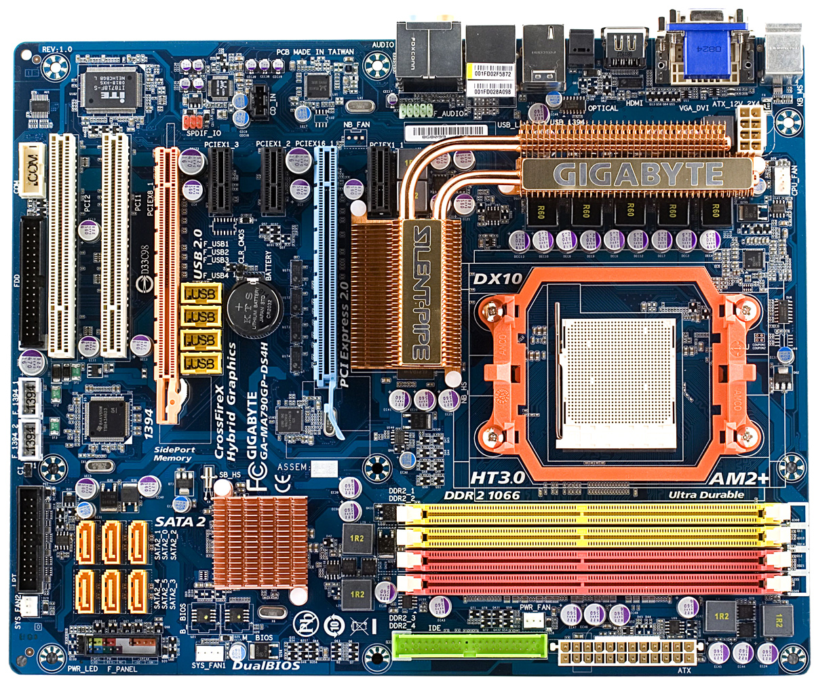
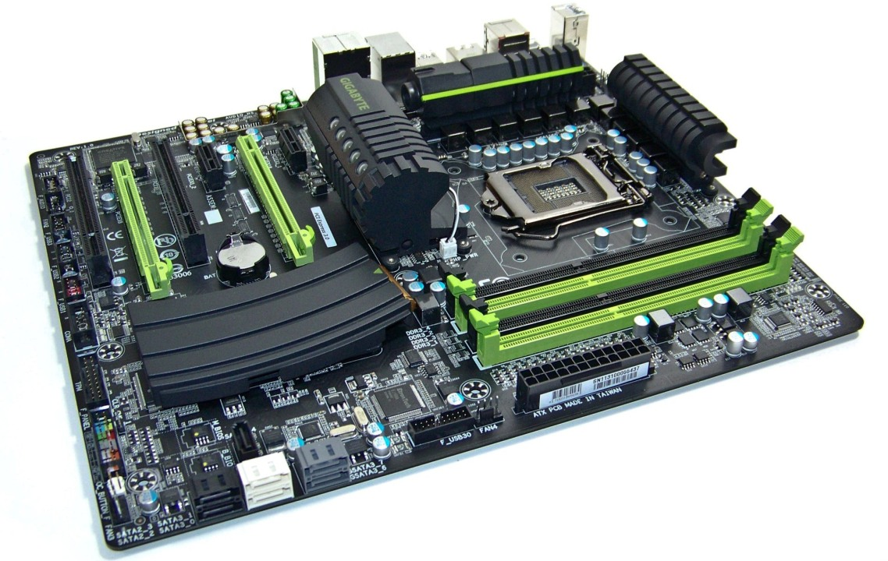

MOTHERBOARD

Μια μητρική κάρτα, επίσης γνωστή και σαν μητρική πλακέτα ή μητρική ή κάρτα συστήματος είναι
το κεντρικό και βασικό τυπωμένο ηλεκτρονικό κύκλωμα ενός σημερινού υπολογιστή.
Ένας τυπικός υπολογιστής αποτελείται από τον μικροεπεξεργαστή, την κεντρική μνήμη και άλλα
βασικά υποσυστήματα που βρίσκονται και αυτά στην μητρική. Άλλα μέρη του υπολογιστή, όπως
εξωτερικά μέσα αποθήκευσης, κάρτες επέκτασης γραφικών, ήχου κτλ και διάφορα περιφερειακά
όπως εκτυπωτής, πληκτρολόγια κτλ, είναι όλα τμήματα που ενσωματώνονται στην μητρική μέσω
καλωδίων και υποδοχών διάφορων τύπων.